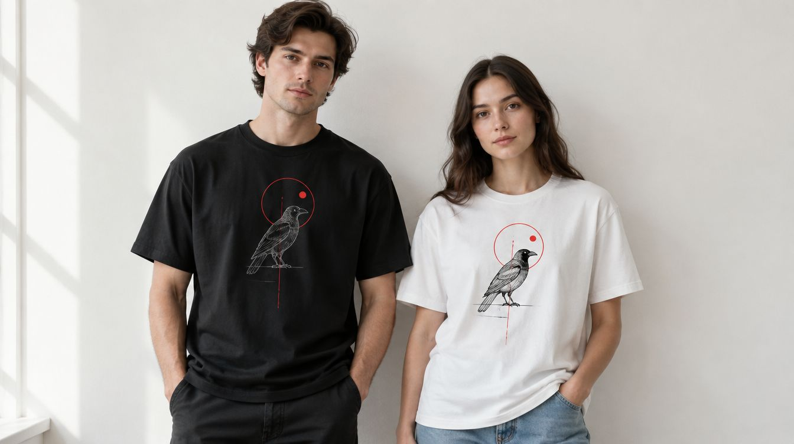

Göğsünde logo taşıyan ekip tişörtünden üstünde çocukluk fotoğrafı olan doğum günü tişörtüne: tasarım bizden, kumaş seçimi birlikte, baskı DTF ile.

Tişört, baskının en çok sipariş edilen ürünü; iyi olanla vasat olanı ayıran şey baskı değil, kumaş ve tasarım dengesi. İnce bir tişörte büyük bir baskı ağır durur, kalın bir penyeye küçük bir logo kaybolur. Bu yüzden ürünü ve baskıyı ayrı değil, birlikte seçiyoruz.
Baskıyı DTF ile yapıyoruz: koyu ve açık kumaşta aynı canlılık, fotoğraf ve ince çizgi, tek parçadan başlayan sipariş.
Hazır tasarımlar. Birine dokunun — aşağıdaki stüdyoda açılır, üstünde istediğiniz gibi oynarsınız.
Rengi seçin, tasarımı sürükleyip büyütün, yazıyı kendiniz yazın — ya da kendi dosyanızı açın. Beğendiğinizde tek tuşla sipariş.
Stüdyo yükleniyor… Açılmazsa WhatsApp'tan yazın, tasarımı birlikte kuralım.
Önizleme baskının yerini, ölçüsünü ve rengini gösterir; kumaş dokusu ve ekran ayarları yüzünden gerçek ürün birebir aynı görünmeyebilir. Baskıdan önce size son bir görsel onayı gönderiyoruz. Dosyanız yüklenmiyor — tarayıcınızda kalıyor, sipariş mesajına indirdiğiniz önizlemeyi ekliyorsunuz.
Kurumsal tişört iki işe yarıyor: ekibi tanınır kılmak ve markayı gezdirmek. Kafe ve restoran personeli, teknik servis ekibi, fuar görevlileri, staj programı, şirket pikniği; her birinde kumaş ve baskı yeri değişiyor. Saha ekibine daha kalın ve koyu renk, fuar görevlisine açık renk ve büyük sırt baskısı, ofis içine küçük göğüs logosu öneriyoruz.
Beden listesini alıp ürünü tedarik ediyor, logoyu kurumsal renklerle basıyor, katlanmış ve bedenine göre etiketlenmiş teslim ediyoruz. Tekrar siparişte aynı ürün ve aynı film kullanıldığı için partiler arasında fark olmuyor.
Kişiye özel tişörtte kural şu: üzerindeki şey yalnız o kişiye anlam taşımalı. Çocukluk fotoğrafı, ilk tanışma tarihi, aile içi bir söz, evcil hayvanın portresi, bir çocuk çizimi. Tasarımı biz yapıyoruz; fotoğrafı temizleyip baskıya hazırlıyoruz, yazıyı kumaşa uygun kalınlıkta çiziyoruz.
Çiftler için eşli tişört, arkadaş grupları için aynı tasarımın farklı isimli sürümleri, bebek ve çocuk bedenleri, kına ve bekarlığa veda için toplu ama kişiye özel baskılar en çok gelen işler.
Ürün: pamuklu süprem ve penye tişört, karışım kumaş spor tişört, polo yaka; çocuk, kadın ve erkek bedenleri; beyaz, siyah, lacivert, gri ve sezon renkleri. Elinizdeki tişörte de basıyoruz.
Baskı yeri: göğüs sol küçük, göğüs orta, sırt tam en, kol, ense; aynı üründe birden fazla alan mümkün.
Bakım: tersten ve düşük sıcaklıkta yıkama, tersten ütü, kurutma makinesi yok.
Kumaş, renk ve bedenler; ekip için beden listesi, hediye için tek beden.
Logo ya da fotoğraf baskıya hazırlanıyor, tişört üstünde ekranda gösteriliyor.
Onaydan sonra DTF ile basılıyor; ilk parça kontrol, sonra seri.
Katlanmış, bedenine göre etiketli; hediye siparişinde kutu ve kurdele.
Günlük giyim ve hediye için penye daha yumuşak ve dolgun; toplu ekip tişörtünde süprem daha hafif ve ekonomik. Baskı ikisinde de aynı; kumaşı kullanım yerine göre öneriyoruz.
Önce büyütüp temizliyoruz; baskıya yetmiyorsa söylüyor, fotoğrafı çizime çevirme seçeneğini gösteriyoruz. Basıp sonra “bulanık çıktı” demektense önce ekranda görmek daha iyi.
Olur. Ekip siparişinde her bedenden istediğiniz adedi yazıyorsunuz; tişörtler bedenine göre etiketlenip teslim ediliyor.
DTF baskı esnek bir katman; doğru bakımda çatlamıyor. Kurutma makinesi ve doğrudan ütü ömrünü kısaltıyor, bakım notunu ürünle veriyoruz.
Evet. Tek parça hediye siparişi alıyoruz; kutu ve not kartı istenirse ekleniyor.
İletişim
Kime, kaç adet, hangi renk — yazın; tasarımı tişört üstünde aynı gün gösterelim.